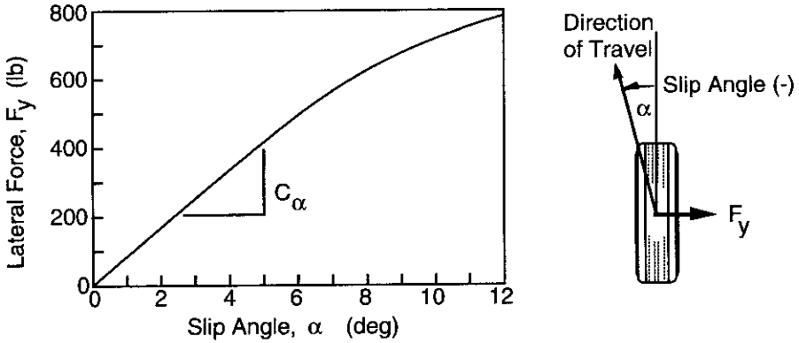
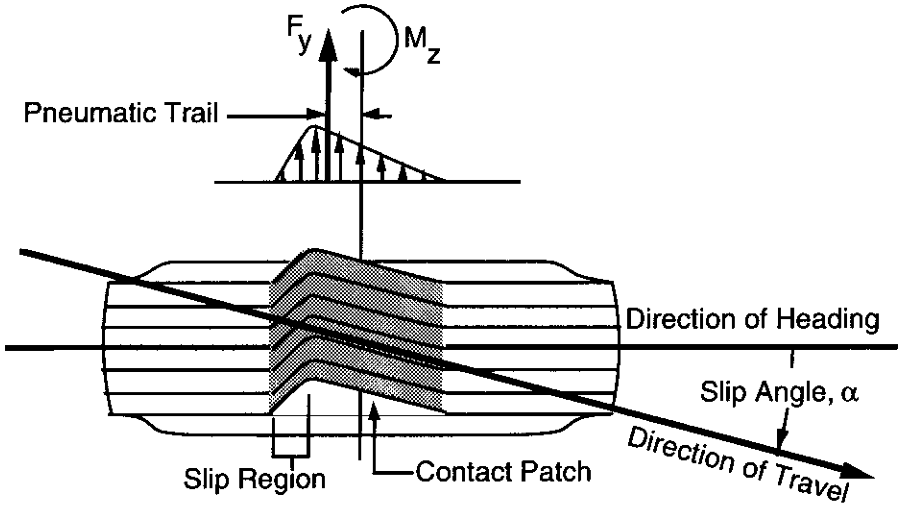

NMA380 - Dinâmica Veicular
\(\delta_{\mathrm{b}} \cong \frac{\mathrm{L}}{(\mathrm{R}+\mathrm{t} / 2)}\)
\(\delta_{\mathrm{i}} \cong \frac{\mathrm{L}}{(\mathrm{R}-\mathrm{t} / 2)}\)
\(\delta=\mathrm{L} / \mathrm{R}\)
Um veículo pretende fazer uma curva de raio \(R\)=50 m com baixa velocidade. A distância entre eixos é \(L\)=2.5 m. Qual deve ser o esterçamento das rodas para que esta curva seja realizada respeitando a geometria de Ackerman?
\(\Delta \cong \frac{\mathrm{L}^{2}}{2 \mathrm{R}}\)
Ângulo de deriva no pneu
\(\mathrm{F}_{\mathrm{y}}=\mathrm{C}_{\alpha} \alpha\)
Ângulo de deriva no pneu
\(\mathrm{F}_{\mathrm{y}}=\mathrm{C}_{\alpha} \alpha\)
\(\mathrm{F}_{\mathrm{fr}}=\mathrm{M} \mathrm{c} / \mathrm{L}\left(\mathrm{V}^{2} / \mathrm{R}\right)\)
\(\mathrm{F}_{\mathrm{yr}}=\mathrm{M} \mathrm{b} / \mathrm{L}\left(\mathrm{V}^{2} / \mathrm{R}\right)\)
\(\alpha_{\mathrm{f}}=\mathrm{W}_{\mathrm{f}} \mathrm{V}^{2} /\left(\mathrm{C}_{\alpha \mathrm{f}} \mathrm{g} \mathrm{R}\right)\)
\(\alpha_{\mathrm{r}}=\mathrm{W}_{\mathrm{r}} \mathrm{V}^{2} /\left(\mathrm{C}_{\alpha \mathrm{r}} \mathrm{g} \mathrm{R}\right)\)
\(\alpha_{\mathrm{f}}=\mathrm{W}_{\mathrm{f}} \mathrm{V}^{2} /\left(\mathrm{C}_{\alpha \mathrm{f}} \mathrm{g} \mathrm{R}\right)\)
\(\alpha_{\mathrm{r}}=\mathrm{W}_{\mathrm{r}} \mathrm{V}^{2} /\left(\mathrm{C}_{\alpha \mathrm{r}} \mathrm{g} \mathrm{R}\right)\)
\(\delta=57.3 \mathrm{L} / \mathrm{R}+\alpha_{\mathrm{f}}-\alpha_{\mathrm{T}}\)
\(\delta=57.3 \frac{\mathrm{L}}{\mathrm{R}}+\left(\frac{\mathrm{W}_{\mathrm{f}}}{\mathrm{C}_{\alpha \mathrm{f}}}-\frac{\mathrm{W}_{\mathrm{r}}}{\mathrm{C}_{\alpha \mathrm{r}}}\right) \frac{\mathrm{v}^{2}}{\mathrm{g} \mathrm{R}}\)
\(\delta=57.3 \frac{\mathrm{L}}{\mathrm{R}}+\left(\frac{\mathrm{W}_{\mathrm{f}}}{\mathrm{C}_{\alpha \mathrm{f}}}-\frac{\mathrm{W}_{\mathrm{r}}}{\mathrm{C}_{\alpha \mathrm{r}}}\right) \frac{\mathrm{v}^{2}}{\mathrm{g} \mathrm{R}}\)
\(\delta=57.3 \mathrm{L} / \mathrm{R}+\mathrm{K} \mathrm{a}_{\mathrm{y}}\)
Neutro (Neutral steer)
\(\mathrm{W}_{\mathrm{f}} / \mathrm{C}_{\alpha \mathrm{f}}=\mathrm{W}_{\mathrm{r}} / \mathrm{C}_{\alpha \mathrm{r}} \rightarrow \mathrm{K}=0 \rightarrow \alpha_{\mathrm{f}}=\alpha_{\mathrm{r}}\)
Sub esterçamento (Understeer)
\(\mathrm{W}_{\mathrm{f}} / \mathrm{C}_{\alpha \mathrm{f}}>\mathrm{W}_{\mathrm{r}} / \mathrm{C}_{\alpha \mathrm{r}} \rightarrow \mathrm{K}>0 \rightarrow \alpha_{\mathrm{f}}>\alpha_{\mathrm{r}}\)
Sobre esterçamento (Oversteer)
\(\mathrm{W}_{\mathbf{f}} / \mathrm{C}_{\alpha \mathrm{f}}<\mathrm{W}_{\mathrm{r}} / \mathrm{C}_{\alpha \mathrm{r}} \rightarrow \mathrm{K}<0 \rightarrow \alpha_{\mathrm{f}}<\alpha_{\mathrm{r}}\)
Quando o esterçamento necessário para realizar a curva é o dobro do esterçamento de Ackerman.
\(\mathrm{V}_{\text { char }}=\sqrt{57.3 \mathrm{Lg} / \mathrm{K}}\)
Quando a curva é sustentada com esterçamento igual a zero.
\(\mathrm{V}_{\mathrm{crit}}=\sqrt{-57.3 \mathrm{Lg} / \mathrm{K}}\)